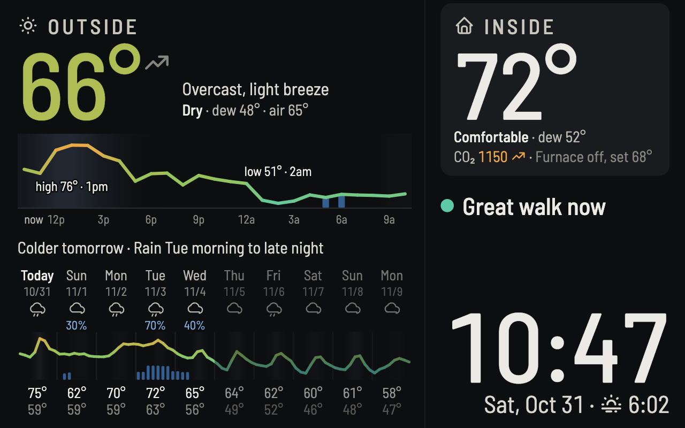

Weather Station Features
An always-on 10-inch tablet in my living room, readable from the couch. See the page live (the indoor numbers are made up in the demo, as they are in this screenshot).

- Temperatures: outside is feels-like, using the Universal Thermal Climate Index (UTCI). Inside is the actual temperature, from the thermostat.
- 24-hour chart: feels-like line with the high and low, rain or snow chance, and a background shaded by forecast sunlight.
- 10-day chart: one continuous air temperature line showing when fronts arrive, with daily highs and lows.
- Freezing: both lines turn icy white where the air is at or below 32°.
- The week in words: the next rain, snow or storms, big temperature swings, and the first freeze.
- Indoor air: CO₂ and dew point from an Aranet4, plus furnace or AC status from a Sensi thermostat.
- Advice: when to open or close the windows, air out the room, or take a walk, plus warnings for storms, ice, high winds and unhealthy air.
- Always on: boots straight into the display, shows no notifications, and fades any data that's out of date.